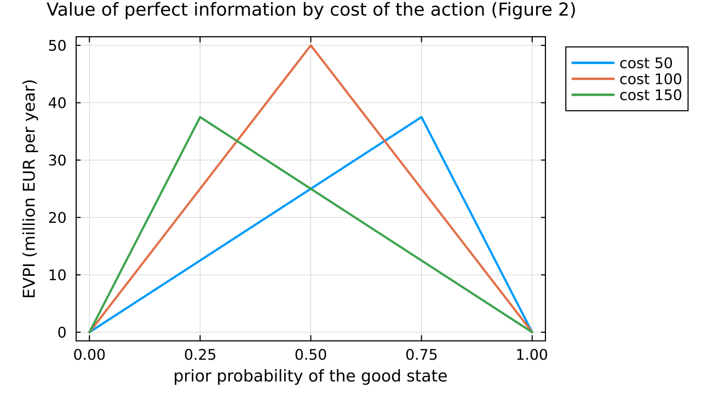
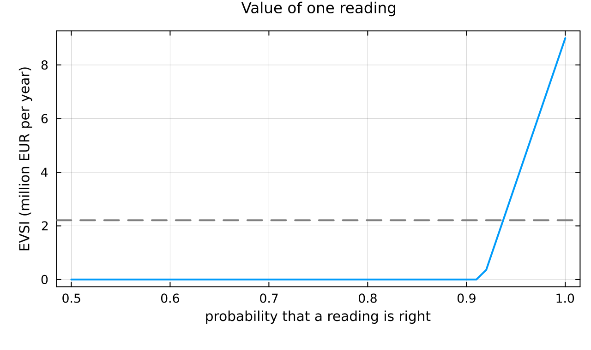
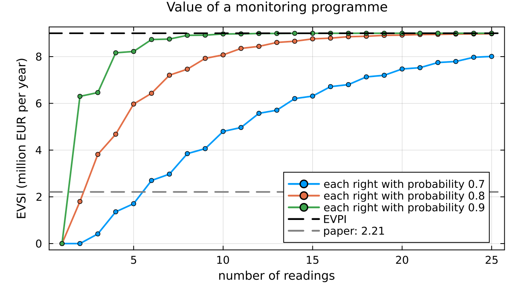
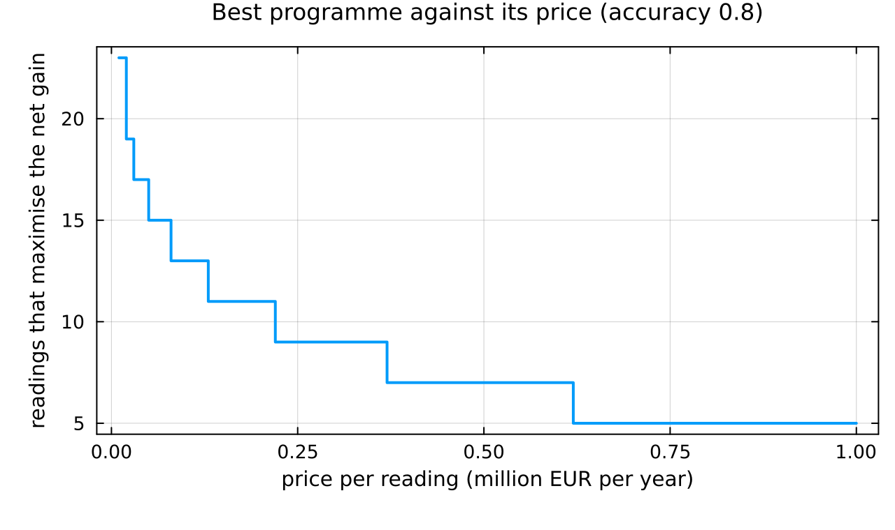

The value of imperfect water-quality monitoring (Luhede et al. 2024)
Simon Frost
- About this case study
- The paper
- The published numbers
- Imperfect monitoring
- What the package adds
- What to take away
About this case study
This case study replicates a published analysis. The paper’s table and its perfect-information results are reproduced exactly. Its value of imperfect monitoring rests on a likelihood fitted to data that are not published, so that one number is quoted, not recomputed, and the vignette instead works out what kind of monitoring would be worth that much. The comparisons are in the test suite (test/fixtures/replications/luhede2024_weser.json, test/test_replications.jl).
The paper
Luhede, Yaqine, Bahmanbijari, Römer and Upmann (2024), “The value of information in water quality monitoring and management”, Ecological Economics 219:108128, doi:10.1016/j.ecolecon.2024.108128, CC BY 4.0. The input is Table 2 of the article.
Decision. Whether to take a management action against nutrient pollution on a water body of the river Weser.
Actions. No action (a0, the baseline) or the action (a1), which is assumed always to reach or keep the good state.
States. The water body is in a bad (x0) or a good (x1) ecological state under the Water Framework Directive.
Belief. A prior probability of 0.1 that the state is good.
Outcome. Money: the paper’s valuation, in millions of euros per year. A water body in the good state is valued at 200 and the action costs 90, both taken by the authors from the literature and from river-basin reports. Nothing here is valued by this package.
using DecisionAnalysis
include(joinpath("..", "_common.jl"))
using Plots
actions = [:a0_no_action, :a1_action]
states = [:x0_bad, :x1_good]
# Table 2 of the paper: payoff v(a, x) in million EUR per year.
payoff = PayoffTable(actions, states, [0 200; 110 110])
problem = DecisionProblem(payoff, FiniteBelief(states, [9 // 10, 1 // 10]);
baseline=:a0_no_action)
md_table(["action", "expected payoff", "expected gain over no action", "chosen"],
[[a, e, g, a in decide(problem, MaxExpectedUtility()).chosen]
for (a, e, g) in zip(actions, aggregate(Expectation(), problem),
expected_gain_over_baseline(problem))])| action | expected payoff | expected gain over no action | chosen |
|---|---|---|---|
a0_no_action | 20 | 0 | - |
a1_action | 110 | 90 | yes |
The published numbers
v0 = act_now_value(problem)
md_table(["quantity (million EUR per year)", "paper (Table 3)", "this package"],
[["value under the prior", 110, v0],
["value with perfect information", 119, v0 + evpi(problem)],
["value of perfect information", 9, evpi(problem)]])| quantity (million EUR per year) | paper (Table 3) | this package |
|---|---|---|
| value under the prior | 110 | 110 |
| value with perfect information | 119 | 119 |
| value of perfect information | 9 | 9 |
The paper then varies the prior probability p of the good state and the cost c of the action. Its Figure 2 reports that at a medium cost of 100 the value of perfect information peaks at p = 0.5, at 50 million euros per year, and that at a low cost of 50 it peaks at p = 0.75.
general(p, c) = DecisionProblem(PayoffTable(actions, states, [0 200; 200-c 200-c]),
FiniteBelief(states, [1 - p, p]); baseline=:a0_no_action)
grid = (0:100) .// 100
plt = plot(; xlabel="prior probability of the good state", ylabel="EVPI (million EUR per year)",
title="Value of perfect information by cost of the action (Figure 2)")
for c in (50, 100, 150)
plot!(plt, Float64.(grid), [Float64(evpi(general(p, c))) for p in grid];
label="cost $c")
end
png_figure(plt)
peak(c) = grid[argmax([evpi(general(p, c)) for p in grid])]
md_table(["cost of the action", "prior at which EVPI peaks", "EVPI there", "paper"],
[[c, peak(c), evpi(general(peak(c), c)), note]
for (c, note) in ((50, "peak at p = 0.75"), (100, "p = 0.5, up to 50"),
(150, "not stated"))])| cost of the action | prior at which EVPI peaks | EVPI there | paper |
|---|---|---|---|
| 50 | 0.75 | 37.5 | peak at p = 0.75 |
| 100 | 0.5 | 50 | p = 0.5, up to 50 |
| 150 | 0.25 | 37.5 | not stated |
The peak is where the two actions tie, p = c / 200: information is worth most to a manager who is undecided.
Imperfect monitoring
The paper’s monitoring signal is a measurement of total nitrogen. Its likelihood is a gamma distribution fitted to measurements from water bodies in the bad state and a four-parameter beta distribution for those in the good state. With it the paper finds a value of 112.21 with monitoring, so that monitoring is worth 2.21 million euros per year (95% interval 2.06 to 2.84), a quarter of the 9 million of perfect information. The data are “available on request” and the fitted parameters are not printed, so this number cannot be recomputed here. What can be done is to ask what a monitoring programme must be like to be worth that.
A single reading
Take the simplest programme: one reading that classifies the water body as good or bad and is right with probability q in either state.
reading(q) = Experiment([q 1-q; 1-q q]; signals=[:reads_bad, :reads_good], states)
qs = (50:100) .// 100
plt = plot(Float64.(qs), [Float64(evsi(problem, reading(q))) for q in qs]; legend=false,
xlabel="probability that a reading is right", ylabel="EVSI (million EUR per year)",
title="Value of one reading")
hline!(plt, [2.21]; linestyle=:dash, color=:gray)
png_figure(plt)
useful = qs[findfirst(q -> information_can_change_decision(problem, reading(q)), qs)]
equivalent = qs[findfirst(q -> evsi(problem, reading(q)) >= 221 // 100, qs)]
md_table(["quantity", "accuracy of a reading"],
[["first accuracy on the grid at which a reading can change the decision", useful],
["accuracy at which a reading is worth the paper's 2.21", equivalent]])| quantity | accuracy of a reading |
|---|---|
| first accuracy on the grid at which a reading can change the decision | 0.92 |
| accuracy at which a reading is worth the paper’s 2.21 | 0.94 |
A reading that is right less than 11 times in 12 is worth nothing at all. The prior is so firmly against the good state that a “good” reading from a poorer test still leaves acting as the better choice, and information that cannot change the action has no value (information_can_change_decision is equivalent to a positive EVSI). The paper’s 2.21 corresponds to a single reading that is right 94% of the time.
Repeated readings
A programme usually takes several samples. With n independent readings, each right with probability q, the signal is the number that read “good”.
count_probability(n, k, q) = binomial(big(n), big(k)) * q^k * (1 - q)^(n - k)
function programme(n, q)
q = Rational{BigInt}(q)
L = [count_probability(n, k, s == 1 ? 1 - q : q) for k in 0:n, s in 1:2] # s = 1: bad
return Experiment(L; signals=[Symbol("good_", k) for k in 0:n], states)
end
ns = 1:25
plt = plot(; xlabel="number of readings", ylabel="EVSI (million EUR per year)",
title="Value of a monitoring programme", legend=:bottomright)
for q in (7 // 10, 8 // 10, 9 // 10)
plot!(plt, ns, [Float64(evsi(problem, programme(n, q))) for n in ns];
label="each right with probability $(Float64(q))", marker=:circle, markersize=3)
end
hline!(plt, [9]; linestyle=:dash, color=:black, label="EVPI")
hline!(plt, [2.21]; linestyle=:dash, color=:gray, label="paper: 2.21")
png_figure(plt)
needed(q, target) = findfirst(n -> evsi(problem, programme(n, q)) >= target, 1:200)
md_table(["accuracy of each reading", "readings before the programme has any value",
"readings to be worth 2.21", "readings to be worth 8 of the 9"],
[[Float64(q), needed(q, 1 // 10^9), needed(q, 221 // 100), needed(q, 8)]
for q in (7 // 10, 8 // 10, 9 // 10)])| accuracy of each reading | readings before the programme has any value | readings to be worth 2.21 | readings to be worth 8 of the 9 |
|---|---|---|---|
| 0.7 | 3 | 6 | 25 |
| 0.8 | 2 | 3 | 10 |
| 0.9 | 2 | 2 | 4 |
The accuracies are ours, chosen to span poor to good tests; the paper’s signal is continuous and its likelihood unpublished.
Net gain
The net gain of a programme is its EVSI less what it costs. The paper compares the two in words but gives no monitoring cost, and none is assumed here. The EVSI is itself the break-even: a programme is worth buying if and only if it costs less per year than its EVSI. For a programme priced per reading, the table gives the largest price per reading at which n readings still have a positive net gain, and the gain that the last reading added.
q = 8 // 10
curve = [evsi(problem, programme(n, q)) for n in 0:25]
md_table(["readings", "EVSI", "break-even price per reading", "added by the last reading"],
[[n, curve[n + 1], curve[n + 1] / n, curve[n + 1] - curve[n]]
for n in (1, 2, 3, 5, 8, 12, 18, 25)]; digits=3)| readings | EVSI | break-even price per reading | added by the last reading |
|---|---|---|---|
| 1 | 0 | 0 | 0 |
| 2 | 1.8 | 0.9 | 1.8 |
| 3 | 3.816 | 1.272 | 2.016 |
| 5 | 5.97 | 1.194 | 1.29 |
| 8 | 7.463 | 0.933 | 0.258 |
| 12 | 8.439 | 0.703 | 0.087 |
| 18 | 8.872 | 0.493 | 0.019 |
| 25 | 8.979 | 0.359 | 0.009 |
The best number of readings depends on the price, so it is shown as a function of the price and not at one assumed value:
prices = 0.01:0.01:1.0
best_n(k) = argmax([Float64(curve[n + 1]) - k * n for n in 0:25]) - 1
plt = plot(prices, best_n.(prices); legend=false, linetype=:steppost,
xlabel="price per reading (million EUR per year)",
ylabel="readings that maximise the net gain",
title="Best programme against its price (accuracy 0.8)")
png_figure(plt)
free = optimal_design(problem, [Symbol("n_", n) => programme(n, q) for n in (5, 10, 15, 20)])
(criterion=free.criterion, best=free.best)(criterion = :evsi, best = :n_20)With no cost stated, optimal_design compares by EVSI alone and the largest programme wins; it takes costs in the units of the payoff when there are some to give.
What the package adds
The value of monitoring when the prior is a range
The prior of 0.1 is an estimate. If all that can be said is that the probability of the good state lies between 0.05 and 0.3, the value of a programme is a range too.
credal = DecisionProblem(payoff, CredalSet(states, [[19 // 20, 1 // 20], [7 // 10, 3 // 10]]);
baseline=:a0_no_action)
p10 = programme(10, 8 // 10)
r_perfect, r_sample = robust_evpi(credal), robust_evsi(credal, p10)
md_table(["quantity (million EUR per year)", "at prior 0.05", "at prior 0.3",
"at the paper's prior, 0.1", "to a Γ-maximin manager"],
[["value of perfect information", r_perfect.members..., evpi(problem), r_perfect.value],
["value of ten readings, each right with probability 0.8", r_sample.members...,
evsi(problem, p10), r_sample.value]]; digits=2)| quantity (million EUR per year) | at prior 0.05 | at prior 0.3 | at the paper’s prior, 0.1 | to a Γ-maximin manager |
|---|---|---|---|---|
| value of perfect information | 4.5 | 27 | 9 | 4.5 |
| value of ten readings, each right with probability 0.8 | 3.87 | 25.62 | 8.07 | 3.87 |
(lowest_evpi_over_the_set=r_perfect.lower, highest_evpi_over_the_set=r_perfect.upper)(lowest_evpi_over_the_set = 9//2, highest_evpi_over_the_set = 27//1)The value of monitoring is several times larger at the optimistic end of the range than at the prior the paper uses: there the manager is closer to undecided. Over the set the EVPI runs from 4.5 to 27, both at its ends, because the prior at which the two actions tie (0.55) lies outside it.
Regret
regret_table(problem)RegretTable{Int64}: regret, 2 actions × 2 states
| action | x0_bad | x1_good |
|---|---|---|
a0_no_action | 110 | 0 |
a1_action | 0 | 90 |
md_table(["rule", "choice"],
[["expected payoff, prior 0.1", decide(problem, MaxExpectedUtility()).chosen],
["minimax regret", decide(problem, MinimaxRegret()).chosen],
["maximin", decide(problem, Maximin()).chosen]])| rule | choice |
|---|---|
| expected payoff, prior 0.1 | a1_action |
| minimax regret | a1_action |
| maximin | a1_action |
Acting is the choice under every rule: its worst regret is 90, the cost of an action that turned out to be unnecessary, against 110 for failing to act on a water body in the bad state.
What to take away
- Table 3 of the paper is reproduced exactly: 110 under the prior, 119 with perfect information, an EVPI of 9 million euros per year in the paper’s valuation; and so are the peaks of its Figure 2.
- The value of imperfect monitoring, 2.21, is not recomputed: the likelihood behind it is not published. It is what a single classification right 94% of the time would be worth.
- Below an accuracy of about 0.92 a single reading is worth nothing, because it cannot change the decision; several poorer readings can.
- The net gain needs a cost that the paper does not give. The EVSI is the break-even cost, and the best size of programme is given as a function of the price.
- Added here: the binomial monitoring programmes and their EVSI, the break-even prices, the value over a range of priors, and the regret table.